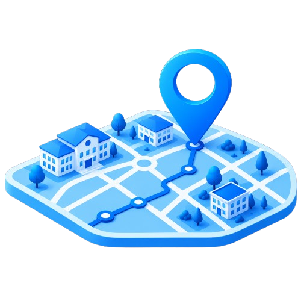

Facilita a estudiantes, docentes y visitantes encontrar los espacios que necesitan.
Información
Conoce más sobre el proyecto SIGE: su propósito, beneficios y cómo contribuye a nuestra institución.
Descubre cómo SIGE mejora la orientación, el acceso a la información y la gestión de los espacios escolares.
Información
Conoce más sobre el proyecto SIGE: su propósito, beneficios y cómo contribuye a nuestra institución.
¿Qué es SIGE?
SIGE es un Sistema de Información Geográfica Escolar que permite visualizar y conocer la ubicación de los espacios, aulas, laboratorios y zonas importantes de nuestra institución de manera rápida, sencilla e interactiva.
¿Para qué lo hicimos?
Facilitar a estudiantes, docentes y visitantes encontrar los espacios que necesitan dentro del colegio, mejorando la experiencia y el acceso a la información.

Reduce el tiempo perdido buscando aulas u oficinas dentro del colegio.
Brinda información clara y actualizada sobre los espacios de la institución.
Ayuda a la administración a organizar y gestionar mejor los espacios escolares.
Características del sistema
- Mapa interactivo y fácil de usar
- Información detallada de cada espacio
- Disponible desde cualquier dispositivo
- Actualizaciones constantes
- Diseñado para toda la comunidad educativa
- Sin necesidad de instalación